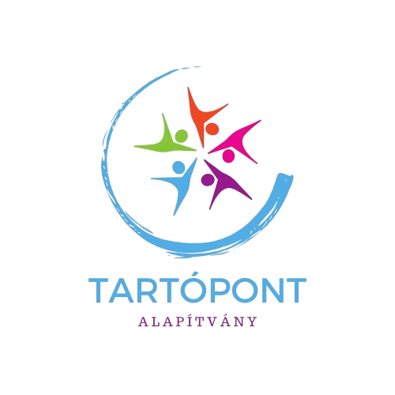
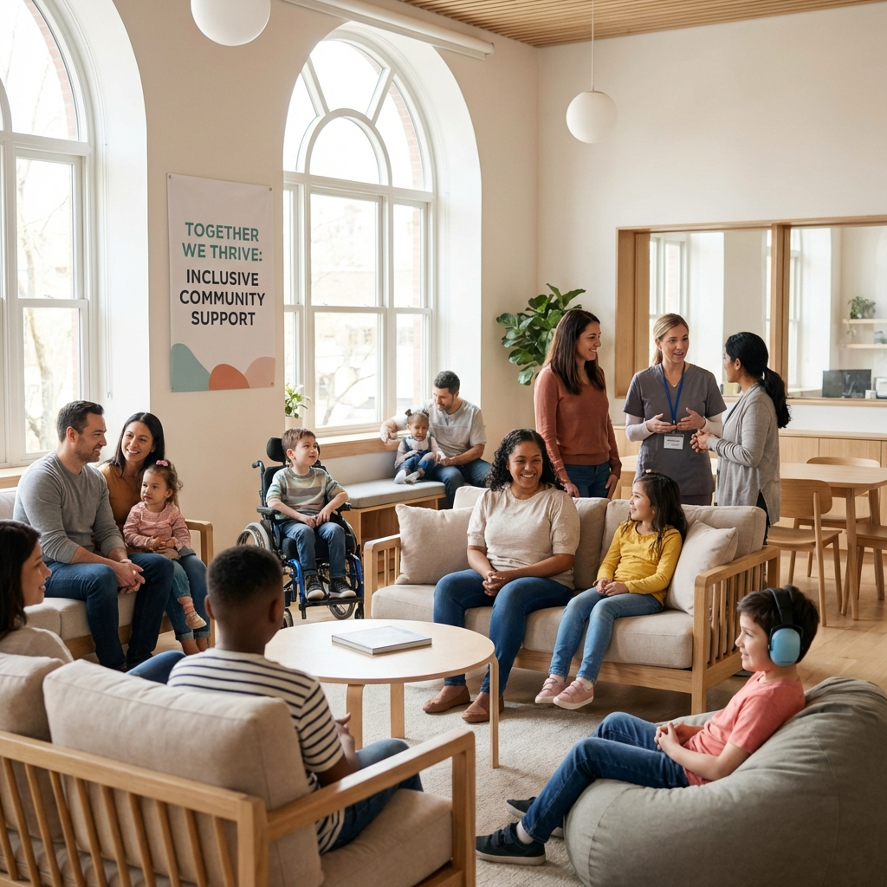

Megtartó támogatás különleges családoknak
Komplex és valódi támogatást nyújtunk azoknak a családoknak, akik fogyatékkal élő, sajátos nevelési igényű, tartósan beteg vagy különleges figyelmet igénylő gyermeket nevelnek.
A TartóPont Alapítvány azért jött létre, hogy komplex és valódi támogatást nyújtson azoknak a családoknak, akik fogyatékkal élő, sajátos nevelési igényű (SNI), tartósan beteg vagy különleges figyelmet igénylő gyermeket nevelnek.
Hiszünk abban, hogy ezekben a családokban nemcsak a gyermeknek van szüksége segítségre, hanem a szülőknek is – akik sokszor egyedül küzdenek a mindennapi kihívásokkal, a kimerültséggel, a társadalmi elszigeteltséggel és a folyamatos bizonytalansággal.
Célunk, hogy egy olyan megtartó közösséget és támogató rendszert építsünk, amely nemcsak a gyermekek fejlődését segíti, hanem a szülők mentális és érzelmi jóllétét is helyreállítja és megőrzi.

Olyan támogató környezetet teremteni, ahol a családok nem érzik magukat egyedül. Ahol a szülők kaphatnak szakmai segítséget, érzelmi támaszt és gyakorlati támogatást, miközben gyermekeik is hozzáférhetnek a számukra szükséges terápiákhoz és fejlesztő programokhoz. Hiszünk abban, hogy a valódi változás akkor következik be, ha a családot mint egészet támogatjuk – mert csak egy erős, kiegyensúlyozott szülő tud hosszú távon jelen lenni gyermeke mellett.
Egyéni és csoportos pszichológiai segítség szülőknek, hogy feldolgozzák az érzelmeiket, erőt meríthessenek és megtalálják a belső egyensúlyukat.
Önsegítő és sorstársi csoportok, ahol a szülők megoszthatják tapasztalataikat, tanulhatnak egymástól, és érezhetik, hogy nincsenek egyedül.
Segítség az ügyintézésben, a megfelelő terápiákhoz és szolgáltatásokhoz való hozzáférésben, valamint a szükséges információk megszerzésében.
Gyermekfelügyelet, célzott támogatások és programok, amelyek lehetőséget adnak a szülőknek a pihenésre és regenerálódásra.
Aktív szerepvállalás a társadalmi szemlélet megváltoztatásában és a családok jogainak képviseletében.
Kiadói és sportalapú programok, amelyek a gyermekek fejlődését és a családok jóllétét egyaránt szolgálják.
A valódi támogatás személyes, empatikus és hosszú távú – nem csupán egy-egy szolgáltatás, hanem egy tartós kapcsolat.
A szülők mentális és érzelmi jólléte kulcsfontosságú – mert csak egy erős szülő tud erős támasza lenni a gyermekének.
A közösség ereje megtartó – a sorstársi kapcsolatok és a kölcsönös segítség gyógyító hatású.
Hamarosan itt találhatók majd videóink, sajtómegjelenéseink és interjúink.
Elsősorban olyan családoknak, akik fogyatékkal élő, SNI, tartósan beteg vagy különleges nevelési igényű gyermeket nevelnek Budapesten és környékén.
Keressen minket bizalommal a Kapcsolat menüpont alatt található elérhetőségeinken, vagy töltsétek ki a jelentkezési űrlapot.
Szülőklubokat, mentálhigiénés csoportokat, fejlesztő programokat gyerekeknek és családi napokat a közösségépítés jegyében.
Adományával segíthet abban, hogy még több SNI és fogyatékkal élő gyermeket nevelő családnak nyújthassunk támogatást. Minden forint számít!